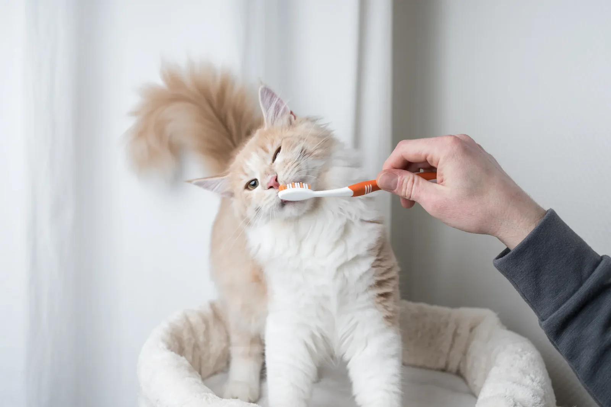

Cat Care Basics: Keeping Your Feline Happy & Healthy
🥣 Feeding
-
Provide a balanced diet with quality cat food suited to their age
(kitten, adult, senior).
-
Fresh water should always be available. Cats can be picky drinkers, so
consider a fountain if your cat doesn’t like bowls.
-
Avoid giving cats human foods like onions, chocolate, or dairy, which
can make them sick.
🛁 Litter Box
-
Keep at least one litter box per cat in the home (plus an extra if
possible).
- Scoop daily and clean thoroughly each week.
- Place litter boxes in quiet, low-traffic areas for privacy.
🎾 Play & Exercise
- Cats need daily play to stay active and mentally sharp.
-
Toys like feather wands, balls, and interactive puzzles are great for
keeping them entertained.
-
Scratching posts are a must to protect furniture and let cats stretch
naturally.
🩺 Vet Care
-
Schedule regular vet checkups, vaccinations, and preventative care.
- Spaying or neutering your cat helps with health and behavior.
-
Watch for changes in appetite, litter box habits, or behavior—they can
be signs of illness.
❤️ Love & Companionship
- Cats may seem independent, but they thrive on affection.
- Spend time petting, cuddling, and bonding with your cat each day.
-
Remember: every cat has a unique personality—get to know what makes
yours happiest.
